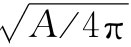
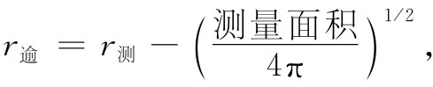

我们生活在三维空间中，所以我们要讨论三维空间弯曲的概念。你们会问：“然而你们如何才能把它想象为在任何方向都是弯曲的呢？”好吧，我们所以不能把空间想象为在任何方向都是弯曲的，那是因为我们的想象力还不够好（或许也正因为我们不能想象得太多，所以我们不能完全摆脱真实世界）。但仍可以定义 三维世界的曲率，而用不到脱离这个三维的世界。我们曾谈论过的关于二维世界中的一切仅仅是一个练习，目的是为了说明如何才能获得曲率的定义，而不需要我们具有从外部“观望”的能力。
我们可以用生活在球面上或热板上的先生们曾使用的、完全相似的方法，来确定我们的世界是否是弯曲的。或许我们不能区分这两种情况之间的差别，但的确可以把这些情况与平直空间或平板区分开来。如何区分？相当容易：设置一个三角形并测量其内角；或做一个大圆并测量其周长和半径；或者尝试设置一些精确的正方形；或者试做一个立方体。检测在每种情况下几何定律是否成立。如果它们不成立，我们就说该空间是弯曲的。若设置一个大三角形，而且其内角之和大于180°，则我们可以称该空间是弯曲的。或者，若测得一圆的半径不等于其周长除以2π，则我们也可以说该空间是弯曲的。
你会注意到，情况在三维中可能比在二维中复杂得多。在二维中的任何一个地方都有确定大小的曲率，但在三维中的每个地方可能存在有关曲率的几个分量 。如果在某个平面内安置一个三角形，则只要三角形的平面有不同的取向就可能得出不同的答案。或举一个圆的例子。假定我们画了一个圆并测量它的半径，结果并不与C/2π相符，以致存在某个逾半径。此时我们画出另一个与其垂直的圆，如图42-15所示。对于这两个圆，不一定有完全相同的逾半径。事实上，对某一个平面上的圆来说可能存在正的逾，而对另一个平面上的圆来讲可能存在亏损（负逾）。
图42-15 不同取向的圆可以有不同的逾半径
或许你们正在想一个好主意：我们不是可以用三维的球 来获得各处所有的分量吗？我们可以取所有与空间给定点等距离点以确定一个球。然后在球面上设置一个精密的正交网格，并把这些小区域加起来，这样我们就可以测得球的表面面积。按照欧几里得几何学，总面积A被认为是半径平方的4π倍，所以我们可以定义“预期半径”为 。我们也可以挖一个洞通到中心并测量其距离，从而直接测得半径。我们可以再次将测量半径减去预期半径，并把其差称为半径的逾，即

它应该是完全令人满意的曲率测量，它的巨大优点在于它与三角形或圆的取向无关。
但是球面的逾半径也有缺点，它并不完全表示空间的特征。由于存在各种曲率的平均效应，所以它给出的是所谓三维世界的平均曲率 。然而，既然是一种平均，它就不能完全解决关于确定几何图形的问题。如果你只知道这个数值，则不可能预言空间的全部几何性质，因为你不可能知道对于不同取向的圆会发生什么情况。完整的定义需要在每一点规定六个“曲率数”。当然，数学家知道如何写出所有这些数。总有一天你可能会在数学书中看到怎样用高级而精巧的形式把它们写出来，但是，起初用粗略的方法弄清楚你试图写出些什么，这不失为一个好主意。对于大多数目标来说，平均曲率可能就足够了 [3] 。